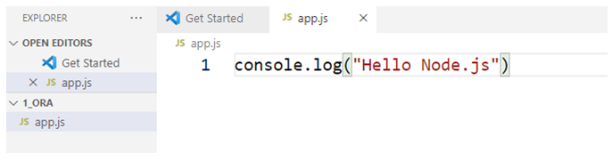
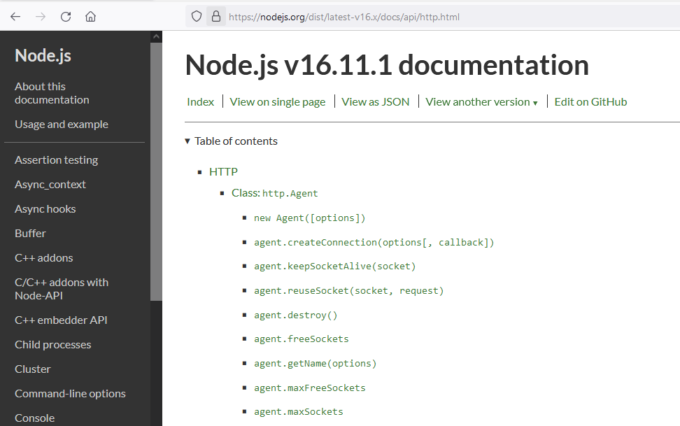

Mi történik, amikor a címsorba
beírjuk az URL-t?
- Történik egy domain lekérés. A domain portja: 53 környékén.
- Beazonosítjuk a távoli szervert. Mi történik ezután?
- Elküldünk neki egy kérést. Request egy csomag. A csomag miből áll? Mindig megy egy head, és egy body. Mi van a requestben? Benne van az URL!
- A request erőforrás alapján varázslat történik. Ezt a varázslatot a NODE.JS-sel fogjuk elvégezni.
- Választ küld. Response egy csomag. Mi van a csomagban? head, és body. MI van a bodyban? A tartalom. A tartalom ami megjelenik, pl html, jpg, mov.
- A Chrome lerendereli és megjeleníti.
Ami a háttérben megy, az a back end, ami az előtérben, az a react és a front end.
Mivel fogunk foglalkozni a NODE.js-ben? --> Request-el, response-al és a varázslattal.
Mi a node.js? --> Javascript keretrendszer, ami a háttérben fut.
Javascript keretrendszer különbségek:
- - Front end, react: felhasználóval való kommunikáció, interaktivitásért felelnek, és megvalósíthatnak üzleti politikát is.
- - Back end keretrendszer: kizárólag az üzleti logikáért felel, a háttérben futó interaktív folyamatokat helyezzük ide. Back end keretrendszer (Node.js) képes külső adatforrásokhoz való hozzáféréshez. A Node.js képes fájlt írni, olvasni, képes adatbázist manipulálni.
URL: egységes erőforrás leíró. Az URL központi része a servernek a címe.
Hova gépelünk? --> Böngésző címsorába írjuk az URL-t.
https://hwsw.hu:port/path#poz?kulcsérték&kulcsérték
| https | : | // | hwsw.hu | :port | / | path | #poz | ?kulcsérték |
|---|---|---|---|---|---|---|---|---|
| 4 | 3 | 2 | 1 | 5 | 6 | 7 | 8 | 9 |
- domain név: hwsw.hu – történik egy domain lekérés.
- minden server erőforrás //-el kezdődik, csak ezután lehet megadni a konkrét domain nevet.
- : csak elválasztó karakter
- https: protokoll, milyen protokoll szerint szeretnénk kommunikálni. Ehhez egy alapértelmezett port cím tartozik. (http-80, https-443)
- : újabb kettőspont. Ha nem alapértelmezett a port, akkor a port címet megmondhatjuk. Megmondjuk, hogy mit keressen a request. Ha a server más porton várja a kérést, mint az alapértelmezett, akkor : után meg kell adni ezt a port címet.
- / jel. Ez a /jel jelenti a webserver gyökérkönyvtárát.
- path: helyi erőforrás (server) leírása. Konkrét mappák, állományok kerülnek megadásra. path= fájlrendszerben található útvonalat jelent.
- #poz. Adott dokumentumon belüli pozíciót jelent.
- ? kulcsérték párok vannak a ? jel után. kulcs1 = érték&kulcs. Az erőforrást mégjobban szűkíthetjük. Az egyes kulcsérték párokat egymástól & jellel választjuk el.
A requestben ezek utaznak.
Az internetes kommunikáció szabályok szerint történik. Az RFC 7231-az internetes kommunikáció szabvány.

Menet:
- Node.js
- Visual Studio Code elindítása
- Letöltjük a Node.js-t és telepítjük! telepítés...
- Visual Studio Code újraindítása
- Terminal => node –v ----- Lekérdezi a verziót.
Ha kiír egy verzió számot, akkor sikerült a telepítés.
pl:
PS D:\SZOFTVERFEJLESZTO\NODE_JS\1_ora> node -v
v16.11.0
PS D:\SZOFTVERFEJLESZTO\NODE_JS\1_ora> - npm –v: ha ez is visszaad egy számot, akkor tudunk dolgozni.
A node program olyan, mint a java program.
app.js
console.log(”Hello Node.js”);
Ctrl + S (mentés)

Terminalban: node app
PS D:\SZOFTVERFEJLESZTO\NODE_JS\1_ora> node app
Helo Node.js
PS D:\SZOFTVERFEJLESZTO\NODE_JS\1_ora>

A Request metódusai:
- GET: kérés a klienstől
- HEAD: kérés a klienstől, csak a head body nélkül
A GET és a HEAD sima URL-ként továbbítódnak. - POST: kérés klienstől, a server állapotának megváltoztatására. Itt van body.
- DELETE: kérés a klienstől a serveren kijelölt entitás törlésére
- PATCH: kérés a klienstől a serveren lévő entitás módosítására (átmeneti)
- PUT: kérés a klienstől a serveren lévő entitás felülírására
- … RFC 7231, további kérések
STATUS CODE:
1xy - információ
2xy – siker 200-> Ez szeretjük!
3xy – átirányítás
4xy – hiba kilens oldali pl 404.
5xy – server oldali hiba
Node.js DOCS
A Node.js dokumentációját elérhetjük a hivatalos weboldalon.Innen tudunk tanulni. A példák már ES6-ban vannak.
Válasszuk ki a http.createServer([options][, requestListener])-et, nézzük meg hozzá a példát.
console.log("Hello Node.js")
const http = require('http');
// Create a local server to receive data from
const server = http.createServer((req, res) => {
res.writeHead(200, { 'Content-Type': 'application/json' });
res.end(JSON.stringify({
data: 'Hello World!'
}));
});
server.listen(8000);
Majd írjuk át a portot, létrehozunk magunknak egy 6556-os portot.
console.log("Hello Node.js")
const http = require('http');
const port = 6556;
// Create a local server to receive data from
const server = http.createServer((req, res) => {
res.writeHead(200, { 'Content-Type': 'application/json' });
res.end(JSON.stringify({
data: 'Hello World!'
}));
});
server.listen(port);
Ha most beírjuk, hogy node app, nem történik változás.
Ha a böngészőbe beírjuk, hogy localhost:6556 akkor sem látunk semmit.
A probléma az, hogy van egy require. Külső modulok használatához egy require kell.
Serves leállítása a : CTRL + C npm – node package manager